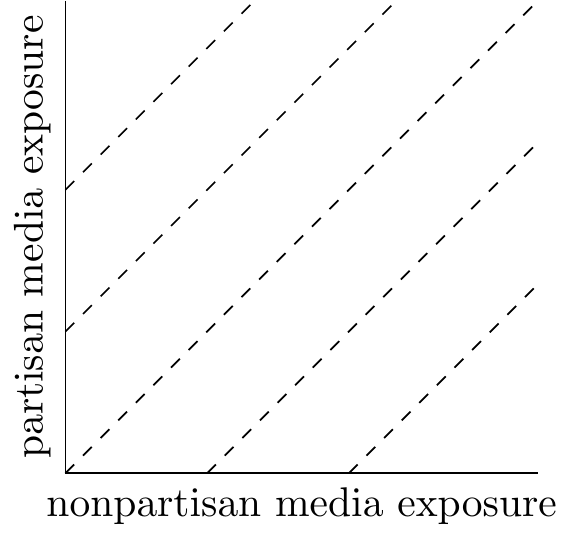
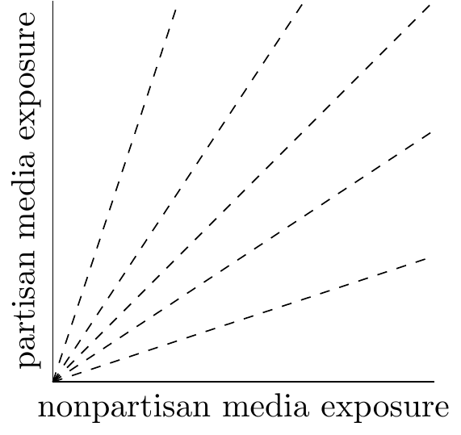

==draft: don’t circulate please==
Three new experiments appear to show Facebook has a small impact on political polarization: The experiments rule out effects on affective polarization of more than 0.02 standard deviations (SD), a much smaller effect than the aggregate increase of 0.5 SD over the last 20 years.1
1 Thanks to Dean Eckles, Solomon Messing, Jeff Allen, & Brandon Silverman for discussion which led to this post. I put together the spreadsheet summary of results with Dean and Solomon.
However we can be confident these experiments under-estimate the aggregate effect of Facebook use on polarization. This is because they are (a) short-run, (b) user-level, (c) manipulate individual features, (d) were run during a period of conservative ranking. If each reason contributes a factor of 2X to effect-sizes then the long-run aggregate effect could be 16X larger than what is measured in these experiments, i.e. meaning we could only rule out an aggregate effect of 0.32 SDs.
In any case there are other non-experimental reasons to think Facebook hasn’t made a large contribution to US polarization. Specifically (1) Facebook is only a small share of all political exposure, (2) most of the aggregate growth in polarization in the last 40 years was among people without internet access, (3) there are a number of other big potential culprits for polarization growth.
Background
The New Experiments. The new papers report on 3 experiments (removing ranking, removing reshares, and downranking like-minded) run for 3 months in late 2020 on Facebook and Instagram. The results show effects on affective polarization of less than 0.03 SD. In the US affective polarization has increased by roughly 0.5 SD over 20 years, so if we compare the raw effects then our CIs would say FB could not have contributed more than 1/25th of this increase.
Is this effect small or large? Most of the reporting has described the effects as “negligible” or “undetectable”. I find that a little irritating: we want to know whether the effects are small or large relative to what we expected them to be, that will tell us what we have learned from these experiments.
What is the question? It’s worth trying to be crisp about the counterfactual: suppose it’s the world in whcih there was no social media, and .
Data. Dean Eckles, Solomon Messing, and myself put together a rough spreadsheet summary of the results from all the experiments reported so far, along with other results from the literature on political effects of media.
Quality of the papers. The papers are very impressive pieces of work, and I thank the authors and everyone involved in getting them published. I have a couple of usual complaints about economics research: First, it’s very confusing to describe an effect as “undetectable,” the reader has no idea how to interpret that without knowing the confidence intervals, every effect is non-zero, we need to focus purely on how large they are. Second, I wish the papers and supplementary materials had far more rich descriptive visualizations, I think it’d give the reader a much better sense of what’s going on.
In a Diagram
Here’s a simple model of what we’re doing: \[\xymatrix{ *+[F:<5pt>]\txt{chronological\\timeline} \ar[dr] & \\ *+[F:<5pt>]\txt{remove reshares} \ar[r] & *+[F:<5pt>]\txt{exposure\\to partisan\\content}\ar[r]|\gamma & *+[F:<5pt>]\txt{affective\\polarization}\\ *+[F:<5pt>]\txt{downrank\\likeminded} \ar[ur] } \]
I think none of the three treatments change overall exposure to partisan content (including off-Facebook) by more than around 10%, so I’m a bit doubtful whether we can learn much about the aggregate impact of exposure to partisan content on affective polarization.
Summary of Results
| effects on FB News Feed composition | political | cross-cutting | untrustworthy |
|---|---|---|---|
| baseline share | 14pp | 21pp | 3pp |
| - rank chronologically | +12% | -10% | +60% |
| - remove reshares | -14% | -3% | -32% |
| - downrank likeminded posts | -5% | +7% | ? |
Note that “cross-cutting”
Comparing Experimental to Aggregate Effects
The cumulative effect of FB on US polarization will likely be larger than measured in this type of experiments:
Experiments only measure short-run effects. Most adults have been using FB for around 10 years, compared to a 3 month experiment. If exposure effects have a half-life of 3 months on attitudes then this experiment would measure 1/2 of the long-run impact of each feature on polarization. I find it hard to calibrate dynamic effects: effects of campaign ads seem to tail off quickly, but presumably broad attitudes are affected by long-run familiarity. I would love to find some academic literature on this.2
Experiments have small effects on exposure to polarizing material. These experiments each affect only one aspect of FB use, all have effects on Facebook usage of much less than 50%, and on exposure to political material on Facebook of much less than 50%. So the aggregate effect of Facebook withdrawal seems likely to be at least 2X larger than measured by any of these experiments. (Note Allcott’s 2018 FB deactivation experiment reduces polarization by 0.16 SD, a large effect, however it’s somewhat controversial as the effect is mainly driven by “exposure to congenial news” which seems to be somewhat mechanical).
Experiments exclude network effects. The effects of FB on polarization likely work not just through direct exposure but also (1) through peoples’ friends and families; (2) through the accumulation of groups & pages. Thus it seems likely the aggregate effect could be 2X or larger than the individual effect.
Experiments were run during a period of tight restrictions on content. The experiments ran between September and November 2020. Compared to earlier in the decade this was a period of a relatively sanitized Facebook: (A) Facebook invested very heavily in integrity systems following the 2016 election, reducing prevalence of many types of bad content by factors of between 2X and 10X; (B) prior to and during the 2020 election Facebook implemented a series of extra “break the glass” measures with the effect of suppressing extreme or fringe political content. On the other hand during an election there will be more overall political content circulating, so the net bias is hard to predict.
2 I could not find any discussion of dynamic effects in any of the so-far published experiment analyses, despite each one having an online appendix with around 300 pages of supplementary material.
If each factor contributed a 2X amplification then the aggregate effect would be 16X larger than the experimentally-measured effect, i.e. effective confidence intervals would be 0.32 SDs instead of 0.02SD.
Appendix: Data on Media and Polarization
I have made very rough estimates for affective polarization and for time-spent on partisan content:
| 2004 | 2016 | 2020 | |
|---|---|---|---|
| affective polarization score | 40 | 45 | 50 |
| minutes/day/adult | |||
| - media | 300 | 300 | 300 |
| - media civic | 15 | 15 | 15 |
| - media civic partisan | 5 | 8 | 6 |
| 0 | 60 | 60 | |
| - Facebook civic | 0 | 6 | 3 |
| - Facebook civic partisan | 0 | 3 | 1 |
Guess et al. (2023):
| Share of Impressions | ||
|---|---|---|
| Political | 14% | 5% |
| Political news | 6% | - |
| From untrustworthy sources | 3% | 1% |
| Uncivil | 3% | 2% |
Pew 2022 report on news platforms
| pct adults regularly get news from | |
|---|---|
| television | 65% |
| news websites | 63% |
| search | 60% |
| social media | 50% |
| radio | 47% |
| 33% | |
| podcasts | 23% |
Radio show popularity. Around half of the top 20 most-listened radio shows in the US are conservative talk, with around 90M weekly listeners (this is double-counting overlapping users).
These types of story are common on FB but relatively rare off FB. Most American political media is relatively centre-ist and not exaggerated. The prominent exceptions are political talk radio (perhaps 40M weekly listeners) and Fox news (perhaps 5M regular viewers).
Boxell, Gentzkow, and Shapiro (2022) document affective polarization across a dozen countries, 1978-2020:

In the US affective polarization index increased from around 25 to 50, “an increase of 1.08 standard deviations as measured in the 1978 distribution.” (I’m not sure if the SD increased).
Across the world there’s no clear trend: some countries increased, other countries decreased. This weakens the simple argument that polarization has increased at the same time as social media use.
Statista: Average time-spent 150 minutes/day/person on social networks
Other Evidence on Facebook and Polarization
Observational data finds that much of the growth in polarization in the US was among people who were not online. Boxell et al. 2017) say “the growth in polarization in recent years [1996-2012] is largest for the demographic groups least likely to use the internet and social media”
The academic literature has identified many other suspects. I’m not sure there’s a consensus. Some potential causes: southern realignment, 1968 changes to the primary system, the Obama presidency, the tea party movement (though each of these could be in part proximal causes). Martin & Yurcoglu (2017) argue that a large part of recent growth is due to cable news: “the cable news channels can explain an increase in political polarization of similar size to that observed in the US population over [2000-2008]. … In absolute terms, however, this increase is fairly small.”
See also Haidt and Bail’s long document Social Media and Political Dysfunction: A Collaborative Review
Appendix: How to Describe a Null Result
Description of effect sizes from the abstracts:
Guess et al. (2023) “Reshares on social media amplify political news but do not detectably affect beliefs or opinions”
“Contrary to expectations, the treatment does not significantly affect political polarization or any measure of individual-level political attitudes.”
Guess et al. (2023) “How do social media feed algorithms affect attitudes and behavior in an election campaign?”
“Despite these substantial changes in users’ on-platform experience, the chronological feed did not significantly alter levels of issue polarization, affective polarization, political knowledge, or other key attitudes during the 3-month study period.
Nyhan et al. (2023) “Like-minded sources on Facebook are prevalent but not polarizing”
“[treatment] had no measurable effects on eight preregistered attitudinal measures such as affective polarization, ideological extremity, candidate evaluations and belief in false claims. These precisely estimated results suggest that although exposure to content from like-minded sources on social media is common, reducing its prevalence during the 2020 US presidential election did not correspondingly reduce polarization in beliefs or attitudes.”
Discussion of Power:
Guess et al. (2023):
“The large samples … allowed for adequate statistical power to detect small effects (for example, for affective polarization, we were powered to detect population average treatment effects with Cohen’s d = 0.032 or larger for both Facebook and Instagram).”
“In all cases, we could rule out effect sizes smaller than those found in previous research [citation to Allcott 2020]
“did not cause detectable changes in downstream political attitudes, knowledge, or offline behavior, including survey-based measures of polarization and political participation.
“these findings suggest that social media algorithms may not be the root cause of phenomena such as increasing political polarization”
Description of effect sizes from authors’ subsequent commentary:
“Despite these changes in users’ on-platform experience, the chronological feed did not significantly alter levels of issue or affective polarization, political knowledge, political behavior or other key attitudes during the study. … It’s interesting to note the disconnect between the relatively powerful effects we document in terms of platform experiences and behavior, and the downstream outcomes focused on knowledge, attitudes, and off-platform behavior.””
“As with the chrono-feed experiment, removing reshares did not significantly affect political polarization or other individual-level political attitudes.”
“Contrary to common belief, chronological feed did not significantly alter polarization, politics knowledge, or other survey-based outcomes, even though chronological feed led users to spend much less time on FB and Insta + changed what content they saw.”
“Median FB user gets 50.4% of content from like-minded sources. But reducing exposure by ~1/3 for 3 months had no measurable effect on attitudes … Decreasing exposure to content from like-minded sources had no measurable effect on a series of measures of political attitudes including affective polarization and ideological extremity.”
Other description of effect sizes:
“Eliminating the filter bubble doesn’t seem to change political attitudes… why is the stuff we write/share so unpersuasive?
“show … there is little evidence that key features of Meta’s platforms alone cause harmful ‘affective’ polarization, or have meaningful effects on key political attitudes, beliefs or behaviors.”
Appendix: Discussions of Power
Guess et al. (2023) “How do social media feed algorithms affect attitudes and behavior in an election campaign?”
The large samples (Facebook: n = 23,391; Instagram: n = 21,373), comprising participants who completed the first two surveys and at least one of the subsequent three waves, allowed for adequate statistical power to detect small effects (for example, for affective polarization, we were powered to detect population average treatment effects with Cohen’s d = 0.032 or larger for both Facebook and Instagram).
(the supplement and pre-analysis plan do not mention “power” or seem to discuss effect-sizes)
Guess et al. (2023) “Reshares on social media amplify political news but do not detectably affect beliefs or opinions”
“allow for adequate statistical power to detect small effects (e.g., for affective polarization, we are powered to detect population average treatment effects with Cohen’s d = 0.032 or larger and sample average treatment effects d = 0.023 or larger).”
Appendix: Model of Media Effects
The simplest model: \[\utt{y}{consumer}{attitude} = \utt{(1-\gamma)\cdot \tilde{y}}{pre-existing}{attitude} +\utt{\gamma \cdot m}{attitude}{in media}.\]
We can extend the model (1) to be dynamic, (2) where media attitude is the weighted average of all the media you’re exposed to:
\[\begin{aligned} \utt{y_t}{attitude at}{time $t$} &= \utt{(1-\gamma)\tilde{y}}{exogenous}{attitude} + \ut{\gamma \sum_{s=0}^\infty \beta^s \utt{\bar{m}_{t-s}}{attitude in}{media at $t-s$}}{media effect} && \text{(attitude a weighted avg of exogenous and exposure)} \\ \bar{m}_t &= \frac{\sum_{i=1}^n x_{i,t}m_{i,t}}{\sum_{i=1}^nx_{i,t}} && \text{(avg attitude in media exposed to)} \\ x_{i,t} &= \text{exposure to source $i$ at time $t$} \\ m_{i,t} &= \text{attitude of source $i$ at time $t$} \end{aligned}\]
This still leaves out (1) differently persuasive media; (2) non-exponential decay in influence; (3) interactions in influence over time; (4) persuasion depending on total.


Note: two types of aggregation. We could write the aggregator in two ways:
\[\begin{aligned} y &= (1-\gamma)\tilde{y} + \gamma\frac{\sum_{i=1}^n x_{i,t}m_{i,t}}{\sum_{i=1}^n x_{i,t}} && \text{(depends on avg exposure)}\\ y &= (1-\gamma)\tilde{y} + \gamma \sum_{i=1}^n x_{i,t}m_{i,t} && \text{(depends on total exposure)} \end{aligned}\]
Appendix: Additional Literature on Media Effects
Lazer, D., Rubineau, B., Chetkovich, C., Katz, N., & Neblo, M. (2010). The coevolution of networks and political attitudes. Political communication, 27(3), 248-274.
MacKuen, M., & Brown, C. (1987). Political context and attitude change. American Political Science Review, 81(2), 471-490.
Chong, D., & Druckman, J. N. (2010). Dynamic public opinion: Communication effects over time. American Political Science Review, 104(4), 663-680.
This reports lab experiments: “we find that competing messages received at the same time neutralize one another. However, when competing messages are separated by days or weeks, most individuals give disproportionate weight to the most recent communication because previous effects decay over time.”
Druckman, J. N., & Lupia, A. (2016). Preference change in competitive political environments. Annual Review of political science, 19.
https://www.pnas.org/doi/10.1073/pnas.1804840115